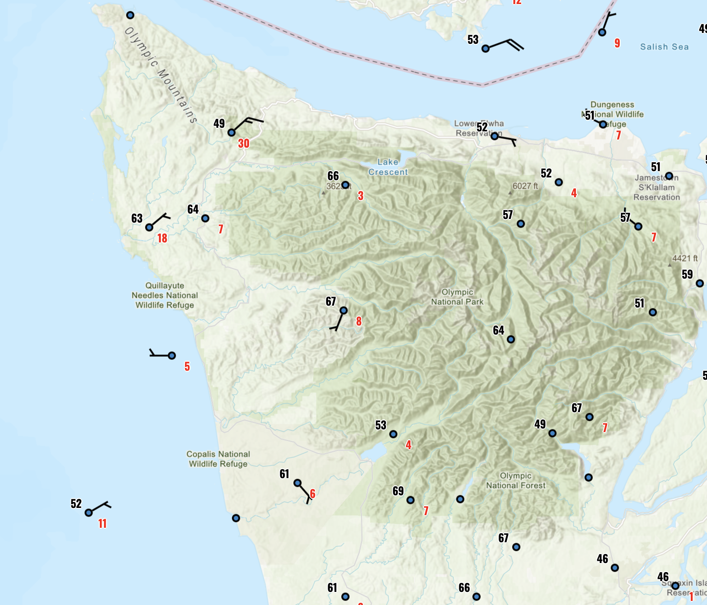
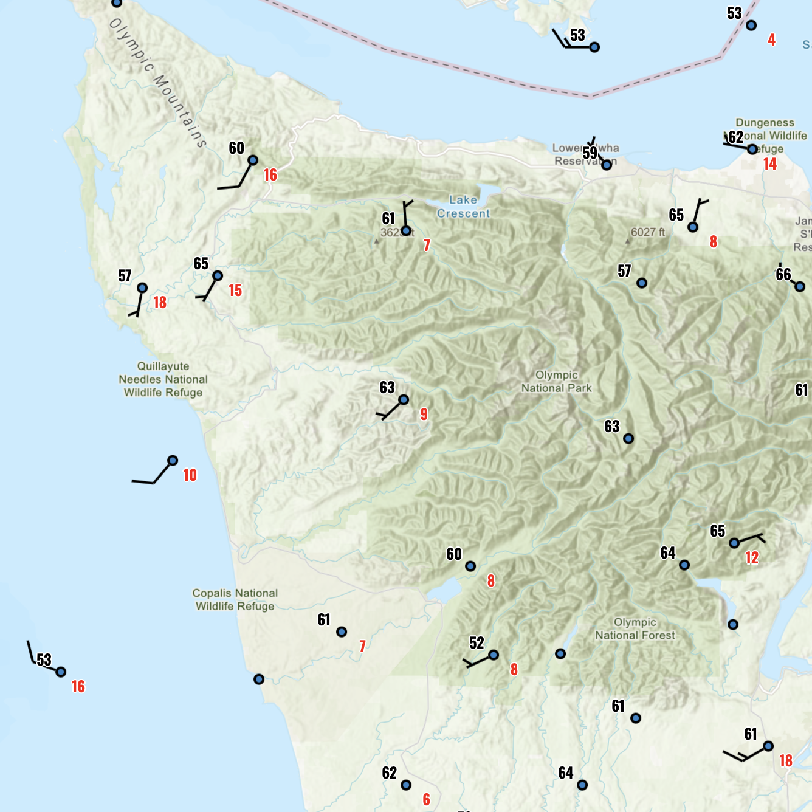
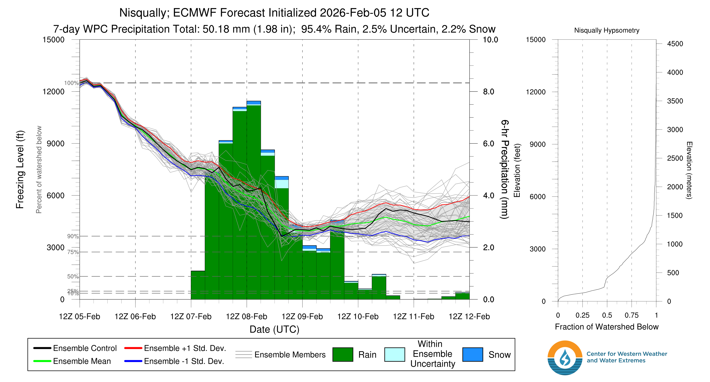
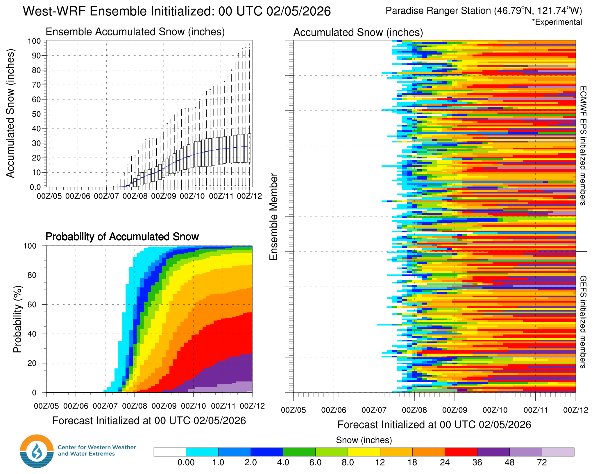
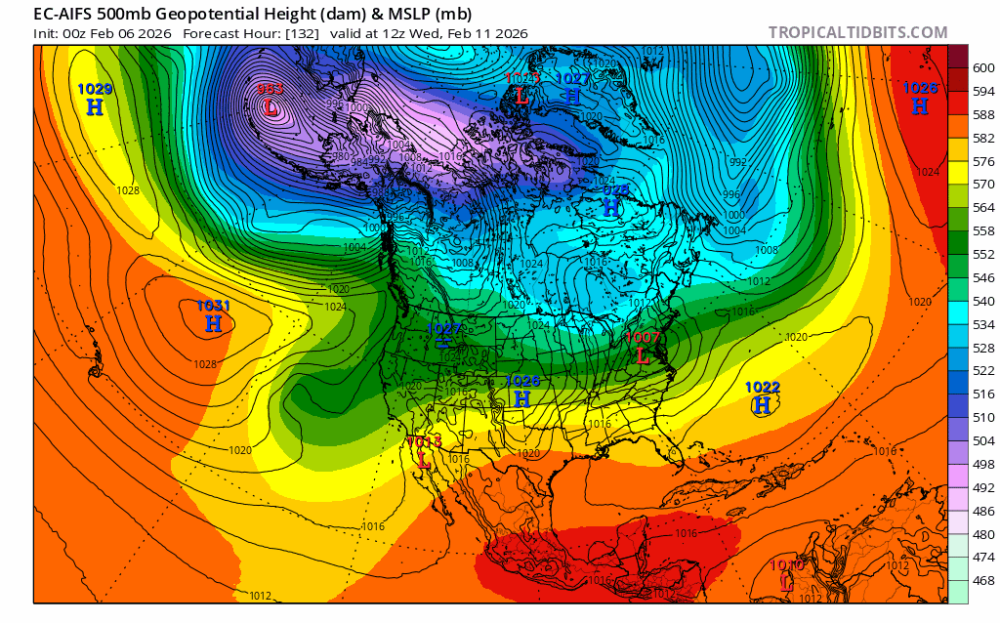
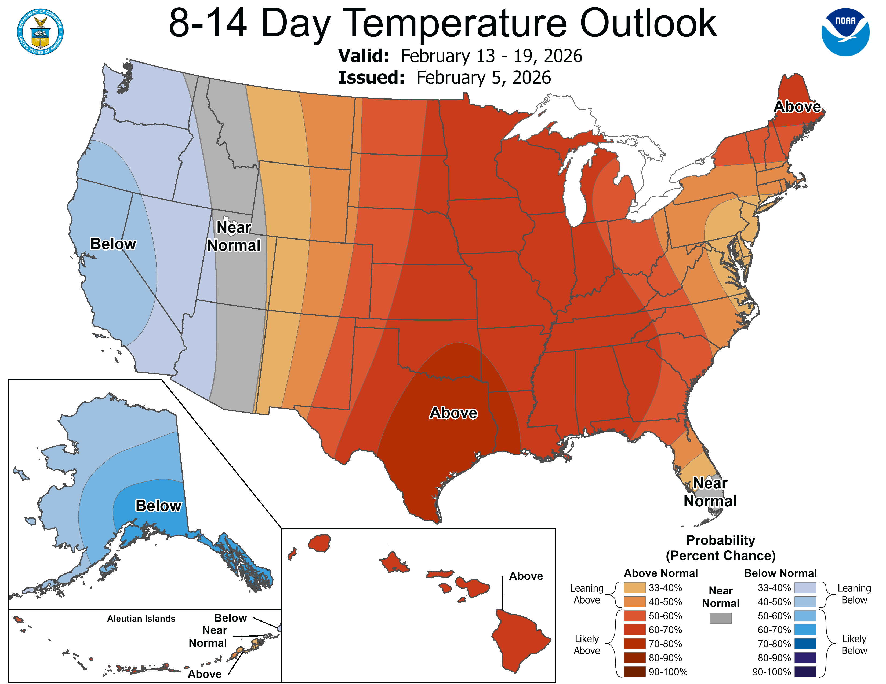

Beaten to a pulpy puddle, but not dead. The snowpack limps along, but it may rise once again.
Welcome to The Dendritic Growth Zone!
Past Week's Recap
The birds are chriping, the flowers are blooming, the sun is out! How lucky are we to have an early start to summer! Trail runners and cyclists are firing on all cylinders, while we skiers retreat to the basement to stare at our snow maps and cry. Simply put, this week has involved a rapid transition from spring to summer conditions. We started the week with a mid-spring storm involving increasing freezing levels and a shift from snow to rain at most elevations on Monday. This storm was followed by a transition between Tuesday and Thursday that spanned April to June as a strong ridge of high pressure strengthened over the region. High clouds kept snow softer on Tuesday and Wednesday, but once clouds cleared out Thursday, a strong surface crust formed that never broke down with our still weak February sun. High temperatures around the region were nothing short of impressive. Just some numbers to throw out there:
- Paradise: 59°F on Wednesday, February 4th.
- Heather Meadows: 64°F on Thursday, February 5th.
- Hurricane Ridge: 61°F on Thursday, February 5th.
Observation Highlight from the Past Week - The Unbreakable Crust
Today (Thursday, February 5) at Heather Meadows near Mt. Baker, temperatures ranged between the low 50s to mid-60s over the day. Even with these sustained high temperatures, there was a thick 5-cm stout refreeze that formed overnight. Why? The cloud "blanket" that was present earlier in the week was pulled off, allowing the snowpack to send its energy out to space unabated and refreeze overnight. But, with our weak February sun and little to no wind, this crust persisted on most aspects all day today even with these ridiculous temperatures. Only in the direct sun did this crust soften up. But expect another stout refreeze even with temperatures in the 50s again, until clouds return.


🧙♂️ Forecast Discussion
Short-term (Friday-Sunday)
On Friday, our death ridge begins to move towards the east while a weak atmospheric river comes in from the southwest. A return to onshore, southwesterly flow and clouds will accompany somewhat cooler, although not below freezing, temperatures in the mountains. Freezing levels will drop from around 10,000' to 8000'. Precipitation will arrive on Saturday morning, mostly in the form of rain up to 6000'. Freezing levels will continue to drop over the day as rain slowly tranistions to snow moving into Sunday. By late Sunday, most mountains locations above 4000' should maintain consistent snowfall.

This precipitation pattern is still somewhat uncertain, making for a relatively difficult forecast at this point
Medium-Term (Monday-Wednesday)
After the weekend, things get a litte more interesting. We will be moving into a more
favorable weather pattern for the first time in weeks. This pattern involved a ridge of
high pressure building over the northeast Pacific and a longwave trough setting up below
the Gulf of Alaska. This set up allows for a series of disturbances (shortwaves) to pass into
our area under westerly to northwesterly flow. With this flow comes colder temperatures and the
potential for substantial snow totals. Nevertheless, uncertainty in snow totals reigns supreme.
Many locations have massive degrees of uncertainty for the long range snow totals in the next 7 days.
For example, the West-WRF model's 7-day snowfall forecast for Paradise ranges from 4 inches to 100 inches.

🧙🔮🧙♂️ Reading the crystal ball - 7+ day outlook
The name of the game right now is this pattern change. But questions persist. First, how long will this set up last? Second, how much snow will each passing shortwave actually bring? While we are confident in an extended period of below average temperatures, the precipitation pattern is still highly variable depending on the track of each of these shortwave systems.


❄️ Snowfall
Weekend Snow Accumulation Forecast
| Site | Through 4am Saturday | Through 4am Sunday | Weekend Snow Accumulation (4pm Thursday through 4am Monday 2 Feb) |
|---|---|---|---|
| Mt. Baker (4500') | 0" | 0-2" | 4-8" |
| Washington Pass | 0" | 0-2" | 6-12" |
| Stevens Pass (4500') | 0" | 0" | 2-6" |
| Hurricane Ridge | 0" | 0" | 1-4" |
| Blewett Pass | 0" | 0" | 0-2" |
| Snoqualmie Pass | 0" | 0" | 0-4" |
| Crystal (5000') | 0" | 0" | 2-6" |
| Paradise | 0" | 0-4" | 6-12" |
| White Pass (5000') | 0" | 0-2" | 4-8" |
🧊 Freezing Level
- Friday: 10000-8000 feet
- Saturday: 8000-6000 feet
- Sunday: 6000-4000 feet
🎿 Our Recommendations
Best Choice This Weekend: Patience for Powder
Low coverage, firm crusts, depressing June-like dirt roads. This is a time to hold our tongue and perform yet another ritual to Ullr. Perhaps we can give an actual recommendation next week. Until then, bide your time. Although snowfall will start in earnest on Sunday, our low tide conditions will make for likely difficult and dangerous travel conditions until terrain can fill in (yet again).
Runner-Up: Watch sports 🏈🥇
We've been recommending a lot of non-ski activities recently, but at least you can longingly watch other people have fun and exercise in exciting conditions while doing their favorite sports. Go Hawks!